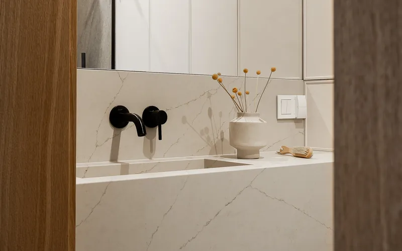
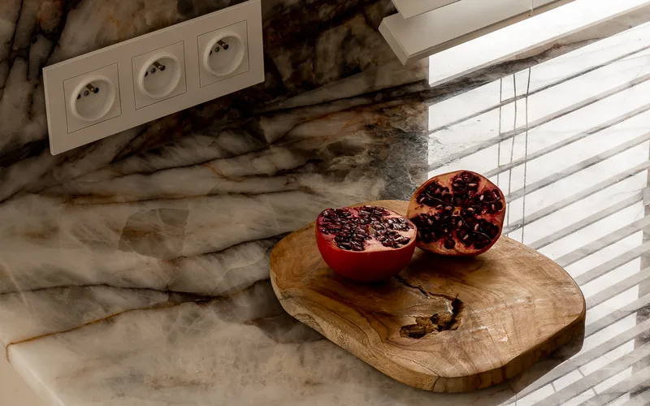
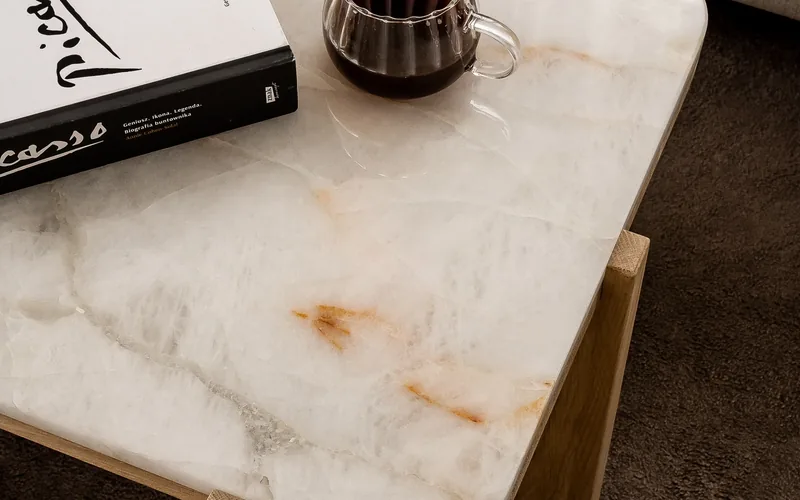
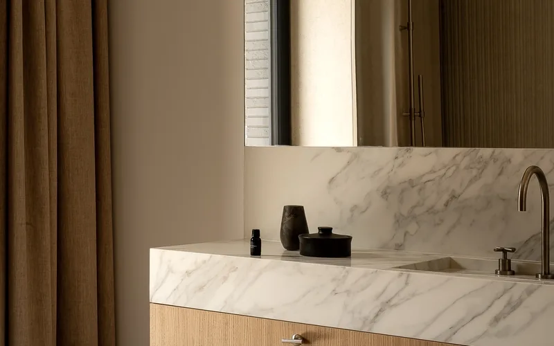

Nasza oferta
Designerskie urządzenia do zabudowy kuchennej od wiodących producentów

Współczesne urządzenia kuchenne to znacznie więcej niż narzędzia codziennego użytku. To inteligentni pomocnicy, którzy dzięki zaawansowanym funkcjom i eleganckiemu designowi podnoszą komfort oraz estetykę każdej kuchni. Sprzęt AGD do zabudowy kuchennej pozwala osiągnąć efekt jednolitej, luksusowej przestrzeni, w której każdy element — od kamiennego blatu po ukryte za frontami urządzenie — tworzy spójną całość.
W naszej ofercie znajdziesz starannie wyselekcjonowane urządzenia do zabudowy od renomowanych producentów. Pomagamy dobrać sprzęt AGD idealnie harmonizujący z kamiennym blatem i zabudową meblową — tworząc spójną, funkcjonalną i luksusową przestrzeń kuchenną. Jako pracownia kamieniarska z wieloletnim doświadczeniem doskonale wiemy, jakie wymagania techniczne stawia integracja urządzeń z kamiennym blatem — od precyzyjnych wycięć pod płytę indukcyjną po odpowiedni montaż zlewozmywaka.
Kuchnia to serce każdego domu, a jej wyposażenie powinno łączyć estetykę z codzienną funkcjonalnością. Dlatego proponujemy urządzenia, które nie tylko pięknie wyglądają, ale przede wszystkim ułatwiają gotowanie, pieczenie i przechowywanie żywności. Każde urządzenie w naszej ofercie zostało sprawdzone pod kątem jakości wykonania, trwałości podzespołów i kompatybilności z zabudową kuchenną opartą na kamiennych blatach.
Pracownia Kamieniarska AMICO jako jedyna w regionie oferuje kompleksową usługę obejmującą zarówno wykonanie kamiennego blatu, jak i dobór, dostawę oraz montaż sprzętu AGD do zabudowy. Dzięki temu nasz klient otrzymuje kompletne rozwiązanie od jednego, zaufanego dostawcy — bez konieczności koordynowania wielu firm i terminów.
Nasze podejście do doboru sprzętu AGD opiera się na indywidualnej konsultacji z klientem. Analizujemy styl kuchni, układ zabudowy meblowej, wymiary blatu i preferencje kulinarne użytkowników, aby zaproponować urządzenia idealnie dopasowane do konkretnego projektu. Nie sprzedajemy sprzętu „z półki" — każda propozycja jest przemyślana i dostosowana do realnych potrzeb.

Płyty grzewcze — indukcyjne i gazowe. Płyty indukcyjne do zabudowy to dziś najczęściej wybierany typ urządzenia grzewczego w nowoczesnych kuchniach. Oferują natychmiastowy czas nagrzewania, precyzyjną regulację temperatury i łatwe czyszczenie gładkiej powierzchni ceramicznej. Płyty gazowe z kolei są niezastąpione dla miłośników tradycyjnego gotowania — zapewniają natychmiastową reakcję na zmianę siły płomienia i pełną kontrolę nad procesem kulinarnym. Oba typy wymagają precyzyjnego wycięcia w kamiennym blacie — to nasza specjalność, którą wykonujemy z milimetrową dokładnością.
Piekarniki do zabudowy i kuchenki mikrofalowe. Piekarniki wbudowane w słupek meblowy lub pod blatem to podstawa funkcjonalnej kuchni. W naszej ofercie znajdziesz modele z termoobiegiem, funkcją grilla, programami automatycznego pieczenia i systemami łatwego czyszczenia. Kuchenki mikrofalowe do zabudowy idealnie komponują się z zabudową meblową — umieszczone w dedykowanej wnęce nad piekarnikiem tworzą ergonomiczny i estetyczny układ. Doradzamy w doborze wymiarów i funkcji, aby urządzenia idealnie pasowały do Twojego projektu kuchni.
Okapy kuchenne — wyspowe, teleskopowe i podszafkowe. Okap to nie tylko urządzenie odprowadzające opary — to również element dekoracyjny, który nadaje kuchni charakter. Okapy wyspowe stanowią efektowny punkt centralny nad wyspą kuchenną z kamiennym blatem. Okapy teleskopowe i podszafkowe to rozwiązanie dla kuchni, w których liczy się maksymalne wykorzystanie przestrzeni — chowają się dyskretnie pod szafką lub w szufladzie, zachowując pełną funkcjonalność. Pomagamy dobrać moc wyciągu do wielkości pomieszczenia i rodzaju gotowania.
Zmywarki, lodówki i chłodziarki do zabudowy. Zmywarki do zabudowy ukryte za frontem meblowym zapewniają cichą pracę i spójny wygląd zabudowy kuchennej. Lodówki i chłodziarko-zamrażarki do zabudowy, w tym modele side-by-side i French Door, pozwalają na wygodne przechowywanie żywności bez zakłócania estetyki kuchni. Dobieramy urządzenia pod konkretne wymiary zabudowy, dbając o odpowiednią wentylację i łatwy dostęp serwisowy. Każde z tych urządzeń integrujemy z kamiennym blatem, zapewniając perfekcyjne połączenia i szczelność.
Kamienny blat, zlew, sprzęt AGD — wszystko od jednego dostawcy, perfekcyjnie ze sobą zintegrowane.

Spójna estetyka całej kuchni. Urządzenia AGD do zabudowy kuchennej ukrywają się za frontami meblowymi, tworząc jednolity, elegancki wygląd zabudowy. Zmywarka, lodówka czy kuchenka mikrofalowa nie wyróżniają się wizualnie — stają się integralną częścią meblościanki. W połączeniu z kamiennym blatem z granitu, marmuru czy kwarcogranitu, kuchnia z urządzeniami do zabudowy prezentuje się jak spójny, luksusowy projekt wnętrzarski, a nie zbiór przypadkowo dobranych elementów.
Optymalizacja przestrzeni — idealne rozwiązanie do każdej kuchni. Urządzenia do zabudowy są projektowane z myślą o maksymalnym wykorzystaniu dostępnej przestrzeni. W małych kuchniach pozwalają zaoszczędzić cenne centymetry, umieszczając piekarnik, kuchenkę mikrofalową i zmywarkę w ergonomicznych niszach zabudowy. W dużych kuchniach z wyspą umożliwiają stworzenie rozbudowanego centrum kulinarnego z wieloma strefami roboczymi — gotowania, pieczenia, przechowywania i zmywania — bez wrażenia chaosu czy zatłoczenia.
Łatwa integracja z kamiennym blatem. Jako pracownia kamieniarska specjalizujemy się w precyzyjnych wycięciach pod sprzęt AGD. Otwór pod płytę indukcyjną, gniazdo pod zlew podwieszany, wycięcie pod baterię kuchenną — każdy z tych elementów wymaga milimetrowej dokładności, którą gwarantujemy dzięki wieloletniemu doświadczeniu. Urządzenia do zabudowy są zaprojektowane tak, aby idealnie współpracować z kamiennymi blatami — szczelne uszczelki, precyzyjne wymiary montażowe i dedykowane systemy mocowania zapewniają trwałe i estetyczne połączenie.
Premium funkcje dla wymagających użytkowników. Nowoczesne urządzenia AGD do zabudowy oferują zaawansowane systemy, które znacząco ułatwiają codzienne użytkowanie kuchni. Piekarniki z pyrolizą i systemami parowego czyszczenia eliminują konieczność ręcznego szorowania wnętrza. Płyty indukcyjne z funkcją booster i elastycznymi strefami grzewczymi pozwalają na jednoczesne gotowanie w naczyniach o różnych rozmiarach. Zmywarki z programami automatycznymi i czujnikami zabrudzenia dostosowują zużycie wody do ilości naczyń, zapewniając perfekcyjne efekty mycia.
Bezpieczeństwo — systemy zabezpieczeń i blokady. Urządzenia do zabudowy wyposażone są w zaawansowane systemy bezpieczeństwa, które chronią domowników — szczególnie dzieci — przed przypadkowym uruchomieniem lub oparzeniem. Płyty indukcyjne z blokadą rodzicielską, piekarniki z systemem chłodzenia drzwi, okapy z automatycznym wyłączaniem po wykryciu przegrzania — to standardowe funkcje, które zapewniają spokój ducha podczas codziennego gotowania. Przy montażu urządzeń w kamiennym blacie dbamy o odpowiedni dostęp do wyłączników i elementów sterujących.

Jeden dostawca na wszystko — blat, zlew i AGD. Największą zaletą współpracy z Pracownią Kamieniarską AMICO jest możliwość zamówienia kompletnego wyposażenia kuchni w jednym miejscu. Kamienny blat z granitu, marmuru lub kwarcogranitu, zlew podwieszany lub wpuszczany oraz pełen zestaw sprzętu AGD do zabudowy — płyta indukcyjna, piekarnik, okap, zmywarka — wszystko dobieramy, zamawiamy i montujemy jako zintegrowany pakiet. Eliminuje to ryzyko niezgodności wymiarów, opóźnień wynikających z koordynacji wielu dostawców i nieporozumień na etapie montażu.
Precyzyjne wycięcia w blacie pod sprzęt AGD. Każde urządzenie do zabudowy wymaga dedykowanego otworu w kamiennym blacie — o ściśle określonych wymiarach, kształcie krawędzi i pozycji względem innych elementów zabudowy. Wycięcie pod płytę indukcyjną musi uwzględniać strefę wentylacji, otwór pod zlew — rodzaj montażu (podwieszany, flushowany lub nakładany), a gniazdo pod baterię — średnicę i kąt nachylenia. Wykonujemy te operacje ręcznie, z precyzją wynikającą z lat praktyki kamieniarskiej — bez automatyzacji, z pełną kontrolą nad każdym milimetrem.
Koordynacja z meblarzem, montaż i uruchomienie. Realizacja kuchni to projekt wymagający ścisłej współpracy wielu specjalistów. Koordynujemy prace z meblarzem klienta, uzgadniając wymiary, poziomy i punkty mocowania tak, aby kamienny blat i sprzęt AGD idealnie pasowały do zabudowy meblowej. Po dostarczeniu mebli przystępujemy do montażu blatu i instalacji urządzeń — podłączamy płytę indukcyjną, montujemy zlew z baterią, ustawiamy piekarnik i zmywarkę w dedykowanych niszach. Na zakończenie przeprowadzamy uruchomienie wszystkich urządzeń, sprawdzamy szczelność połączeń i instruujemy klienta z obsługi sprzętu.
Każde wycięcie w kamiennym blacie pod sprzęt AGD wykonujemy ręcznie — z pasją i milimetrową dokładnością.
Współpracujemy z wiodącymi producentami sprzętu AGD — gwarancja jakości i niezawodności.
Dlaczego warto
Zapraszamy do współpracy
Skontaktuj się z nami — pomożemy dobrać idealne urządzenia do Twojego projektu kuchni. Oferujemy bezpłatną konsultację i profesjonalne doradztwo.
Skontaktuj się